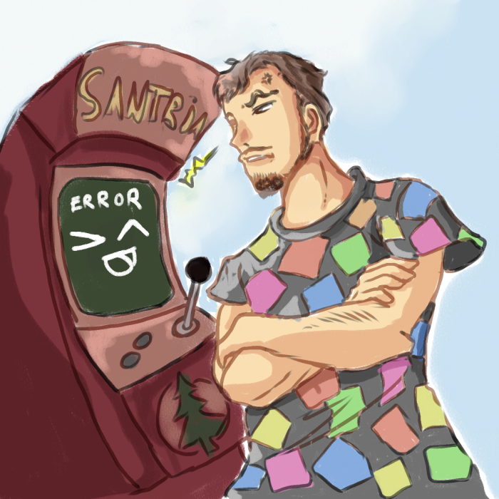

csg

 @ChrisScheidig
@ChrisScheidig
csg is the founder of UmaikiGames and switches between programmer, gamedesigner or artist, whatever is needed! He started game programming at the age of 10, using Visual Basic to move Canvas elements. Since then, he visited a lot of different programming languages and frameworks and sticks currenty at bare bones C++, Javascript and Unity.
Sabaku
 @sabbi_tabbi
@sabbi_tabbi
Sabaku is the artistic soul of UmaikiGames. Her influence on the art design can be felt in every project of the group. She can express her visions in both traditional and pixel art, with a faible for victorian gothic horror and burtonesque comic style. When she isn't busy playing with her cheeky black cat, you can spot her working on a super secret and not yet announced game project. P.S. BISHIES ARE THE BEST!
Schotti

 @SchottiDev
@SchottiDev
Schotti is a retro game enthusiast and grew up playing Link's Awakening and watching Saber Rider and The X-Files. He is a self-taught game developer, trying to combine cute pixel art with modern game mechanics. He has a soft spot for quirky and humorous settings with a touch of mystery. Game Maker Studio is his framework of choice, allowing him to put a huge amount of time into details during development.
Bjoern the Smexy
 @BjoernMeansBear
@BjoernMeansBear
As the composer of UmaikiGames Bjoern is responsible for making stuff sound good. Like, really good. Starting with transposing video game songs into MIDI format for fun at the age of 14, not long after he started doing his own first compositions. Over the years he slowly became the absolute master of FL Studio and FamiTracker [citation needed] and now provides UmaikiGames with his talents of sound and music.